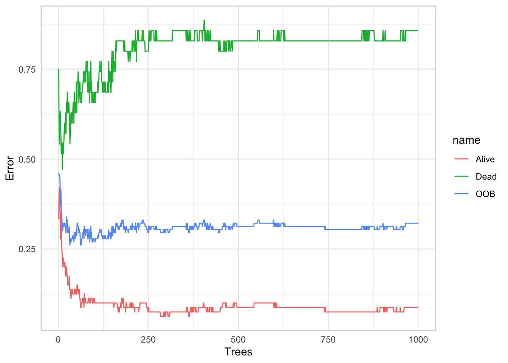
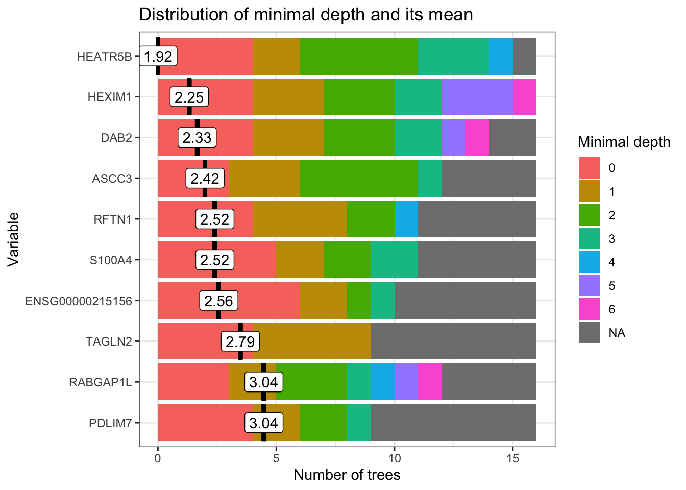
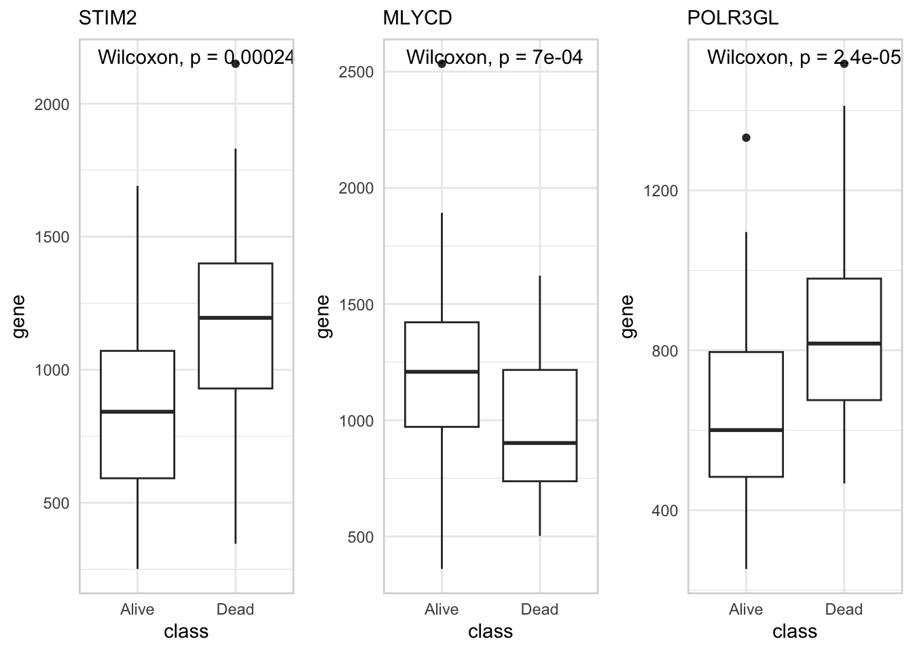

Show the code
## Load in packages
suppressMessages({
require(recount3)
require(dplyr)
require(ggplot2)
require(cowplot)
require(fst)
require(randomForest)
require(randomForestExplainer)
})August 13, 2024
Predictive models with complex structures can be effectively developed using random forest machine learning. A random forest is a type of predictive ML model that constructs a collection of decision trees, each generated from a bootstrapped sample of the data, to reach a consensus prediction. Random forests are versatile, applicable to both regression and classification tasks.
However, they can sometimes operate as a “black box,” making it challenging to interpret their inner workings. To address this, it’s valuable to examine the model to identify which variables most significantly contribute to prediction accuracy. Here, I’ll be testing out the randomForestExplainer package.
First we’ll download some TCGA data, create our target predictor (1Y survival), and remove any genes which contribute nothing (0 counts all the way!).
## Get the project list from recount
projects_all <- rbind(
available_projects(organism = c("human"))) %>%
filter(file_source == "tcga")
## Get recount project information
proj_info <- projects_all %>%
filter(project == "LAML")
proj_info <- proj_info[1, ]
## Download
rse <- create_rse(project_info = proj_info, type = "gene")
## save information in list
raw_data <- list(
raw_counts = compute_read_counts(rse),
metadata = data.frame(colData(rse))
)
raw_data$metadata_min <-
data.frame(
vital = raw_data$metadata$tcga.xml_vital_status,
days = raw_data$metadata$tcga.xml_days_to_death,
barcode = raw_data$metadata$tcga.tcga_barcode
) %>%
mutate(vital_1y = ifelse(vital == "Dead" &
days <= 365, "Dead", "Alive"))
table(raw_data$metadata_min$vital_1y)
Alive Dead
80 35 colnames(raw_data$raw_counts) = raw_data$metadata$tcga.tcga_barcode
remove = is.na(raw_data$metadata_min$vital_1y)
remove_counts = edgeR::filterByExpr(raw_data$raw_counts,
min.count = 500)
reduced_data = list(
raw_counts = raw_data$raw_counts[remove_counts,!remove],
metadata = raw_data$metadata_min[!remove, ]
)
library('biomaRt')
mart <- useDataset("hsapiens_gene_ensembl", useMart("ensembl"))
gene_list <- getBM(filters= "ensembl_gene_id",
attributes= c("ensembl_gene_id","hgnc_symbol"),
values=limma::strsplit2(rownames(reduced_data$raw_counts), split = "\\.")[,1],
mart= mart)
gene_list.o = data.frame(ensembl_gene_id = limma::strsplit2(rownames(reduced_data$raw_counts), split = "\\.")[,1] ) %>%
left_join(gene_list)
rownames(reduced_data$raw_counts) = ifelse(gene_list.o$hgnc_symbol == "",
gene_list.o$ensembl_gene_id,
gene_list.o$hgnc_symbol)First, we’ll look at the error rate from this model:

The OOB line is the out of bag error rate. Since a random forest is built using bootstrapped samples of the data, the OOB is the mean prediction error rate from each sample compared to the prediction without the sample present, therefore the error from unseen samples. the OBB error rate stabilises pretty quickly, so more trees will not improve the error rate.
Similarly, the error rates for both of the classes stabilise. However, the error for patients which are dead within the year is particularly high.
Lets have a look at the object:
Call:
randomForest(formula = vital ~ ., data = rf.data, ntree = 1000, localImp = T)
Type of random forest: classification
Number of trees: 1000
No. of variables tried at each split: 91
OOB estimate of error rate: 32.17%
Confusion matrix:
Alive Dead class.error
Alive 73 7 0.0875000
Dead 30 5 0.8571429Here, you can see that the OOB is approximately 30%, and the error rate for Dead patients is 0.8. This is a terrible model for prediction, as you can see from the predictions that the model typically just predicts a sample to be Alive.
Variables which tend to sit closer to the root node tend to be more important for prediction accuracy. Therefore, assessing the minimal depth for each variable can be a useful exercise to examine a variables importance.

To look at the top three with the smallest depth:
plot_grid(
data.frame(
gene = rf.data$STIM2,
class = rf.data$vital
) %>%
ggplot(aes(x=class, y=gene))+
geom_boxplot() +
theme_minimal() +
panel_border() +
ggpubr::stat_compare_means() +
labs(subtitle = "STIM2"),
data.frame(
gene = rf.data$MLYCD,
class = rf.data$vital
) %>%
ggplot(aes(x=class, y=gene))+
geom_boxplot() +
theme_minimal() +
panel_border() +
ggpubr::stat_compare_means() +
labs(subtitle = "MLYCD"),
data.frame(
gene = rf.data$POLR3GL,
class = rf.data$vital
) %>%
ggplot(aes(x=class, y=gene))+
geom_boxplot() +
theme_minimal() +
panel_border() +
ggpubr::stat_compare_means()+
labs(subtitle = "POLR3GL"),
nrow=1
)
STIM2 has recently been found to be negatively correlated with survival in AML patients (Djordjevic et al. 2024) and upregulation of POLR3G has been found correlated with unfavorable survival outcomes in some cancers (Van Bortle et al. 2022).
Caution should be used with altering the minimum depth as a parameter to be optimised, as it is dependent on the dimensionality of the dataset .
The importance frame has the following columns:
accuracy_decrease (classification) – mean decrease of prediction accuracy after 𝑋𝑗 is permuted,
gini_decrease (classification) – mean decrease in the Gini index of node impurity (i.e. increase of node purity) by splits on 𝑋𝑗,
mse_increase (regression) – mean increase of mean squared error after 𝑋𝑗 is permuted,
node_purity_increase (regression) – mean node purity increase by splits on 𝑋𝑗, as measured by the decrease in sum of squares,
mean_minimal_depth – mean minimal depth calculated in one of three ways specified by the parameter mean_sample,
no_of_trees – total number of trees in which a split on 𝑋𝑗 occurs,
no_of_nodes – total number of nodes that use 𝑋𝑗 for splitting (it is usually equal to no_of_trees if trees are shallow),
times_a_root – total number of trees in which 𝑋𝑗 is used for splitting the root node (i.e., the whole sample is divided into two based on the value of 𝑋𝑗),
p_value – 𝑝-value for the one-sided binomial test using the following distribution:
𝐵𝑖𝑛(𝚗𝚘_𝚘𝚏_𝚗𝚘𝚍𝚎𝚜, 𝐏(node splits on 𝑋𝑗)),
where we calculate the probability of split on 𝑋𝑗 as if 𝑋𝑗 was uniformly drawn from the 𝑟 candidate variables
𝐏(node splits on 𝑋𝑗)=𝐏(𝑋𝑗 is a candidate)⋅𝐏(𝑋𝑗 is selected)=𝑟𝑝⋅1𝑟=1𝑝.
1-4 are computed from the randomForest function, the rest are from the explainer package.